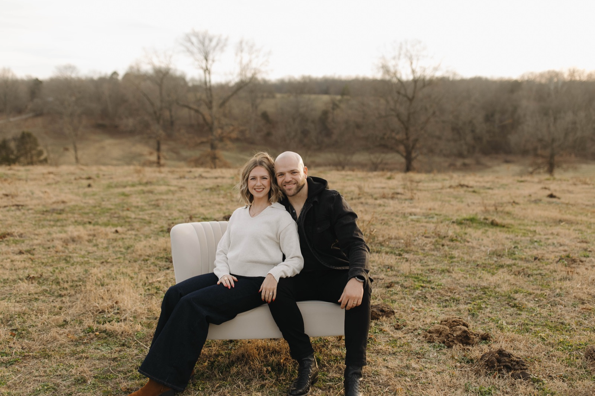

Full Circle
Our latest record, sung the way we've always sung it — together.
From our very first recording to Full Circle — every song is sung with the same heart we carry on stage. Find us wherever you stream.

Our latest record, sung the way we've always sung it — together.
A celebration of the music and faith passed down through generations.
Songs of faithfulness for the long road.
The debut that started it all — songs of Gospel hope.
“Sing unto him a new song; play skilfully with a loud noise.”Psalm 33:3
All four albums are available on Apple Music, Spotify, and Amazon Music, with performance clips on YouTube. Follow along to hear new music first.